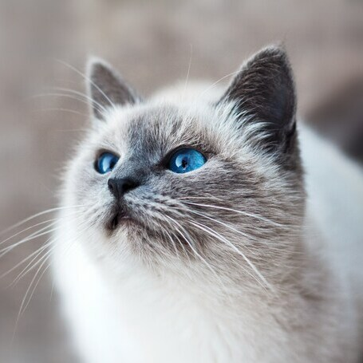

I'm Jomir Jadhav, a Computer Science major and a cat enthusiast.
Blog post
Why You Need to Give Monster Hunter: World Another Shot
Have you tried Monster Hunter but never really got into it? Well then this blog post is just for
you!
Read
Podcast
Virginia Tech Water Contamination of 2024 - The Students' Experiences
When Hurricane Helena hit Virginia, the storms that ensued contaminated the water supply in Montgomery
County, VA. Consequently, the students at Virginia Tech were faced with a boil water notice in order to
safely use and drink the tap water. Stay tuned to learn more about the experiences of Virginia Tech students
during this water contamination crisis.
Listen
Video
Jomir's Fantastic Cat Tier List
Here's a tier list I made ranking a few different cat breeds. Enjoy!
Watch